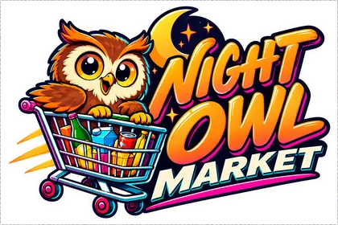

Night Owl Market
« Sleep can wait until half past four. »The owner's motto · Stanley Pruitt
- OwnerStanley Pruitt
- Since1981
- Address530 Palmetto Drive, Highway
From interchange 9, follow Palmetto Drive to the illuminated cardboard owl. - Opening hoursDaily 6pm–4:30am; last customer 4:25am, first yawn at no guaranteed time.
Its story
Stanley opened in 1981 with batteries, sodas and three newspapers. A former night delivery driver, he knows how badly two-in-the-morning hunger tolerates a closed door.
In 1984, a crate of torches arrived instead of ice cream. He created the “after midnight” aisle; sales paid for a freezer, then an alarm clock to close at 4:30am.
Anecdotes
- In March 1984, customer Hazel Flint bought a battery to check whether her clock really said two.
- In November 1985, Stanley tested batteries with a NEON beep cassette attributed to Melvin.
- In July 1986, Dolores Van Pelt inaugurated the freezer at 4:20am; Stanley yawned through the ribbon.
The ad
Played completely straight, on NEON 103.5 FM.
(voix extrêmement rapide)Listen to NEON 103.5 FM →
MINUIT !
UNE HEURE !
DEUX HEURES !
VOUS ÊTES TOUJOURS RÉVEILLÉ !
NIGHT OWL MARKET !
Snacks !
Soda !
Piles !
Journaux !
Glaces !
Et un rayon entier consacré aux choses dont vous avez besoin UNIQUEMENT après minuit !
Le magasin ferme à quatre heures trente.
Pourquoi quatre heures trente ?
(pause)
Parce qu'à quatre heures trente…
(plus bas)
le patron commence à avoir sommeil.
(accélérer)
NIGHT OWL MARKET !
Ouvert quand Vice Bay dort !
Enfin…
(pause)
quand presque tout le monde dort !
Good to know
- The night aisle stays covered before midnight, even when the shop is open.
- The owl has painted-open eyes and a contract without breaks.
The neighbour
Quiet Wash Laundry is a few doors before it; Stanley sends customers there while he mops the floor.